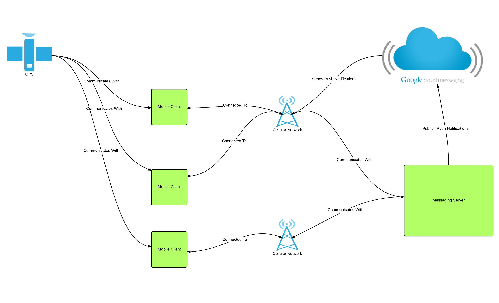

The architecture of the system as a whole centers around mobile devices acting as clients in the system. These clients communicate with two external sources: GPS satellites and a central messaging server. Communication between clients and the central messaging server happens over the device’s available network connections, either cellular or wi-fi.
Typically, GPS satellites are used in conjunction with cellular towers to obtain the position of a user’s device which is sent to the user’s groups through the central messaging server. If a device does not include a GPS radio, then the Android operating system will gather location data based on cellular network triangulation or other means of gaining location data that is available to the system.
Communication between devices and the central messaging server follows a similar architecture to a traditional client-server architecture as found on the web. User account information is posted to and retrieved from the server via standard HTTP GET and POST requests. Chat messages are transmitted over an open WebSockets connection that is maintained between the server and active clients. WebSockets allows new messages to be pushed directly to the client whenever a new message is published to a group that the user is subscribed to.
When a client device becomes “inactive”, such that the application is pushed to the background or the screen is turned off, then chat messages are sent to the client over the Google Cloud Messaging service. The Google Cloud Messaging service maintains an always open connection to Android devices running Google Play Services (which includes nearly all Android phones), so chat messages can be pushed to clients without impacting battery performance.
{kind=link}